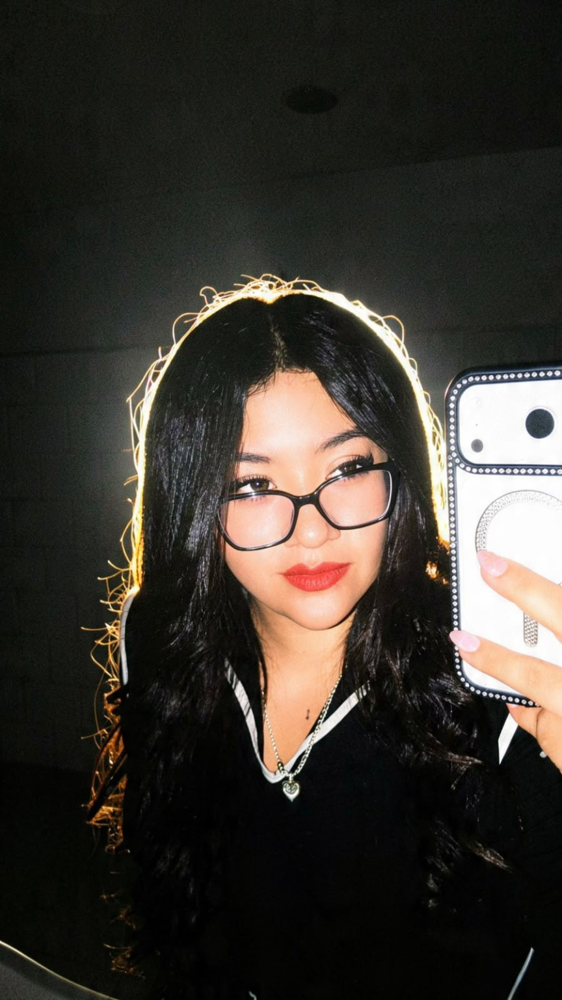
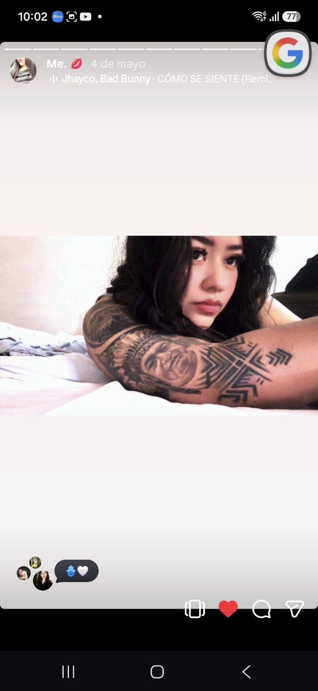
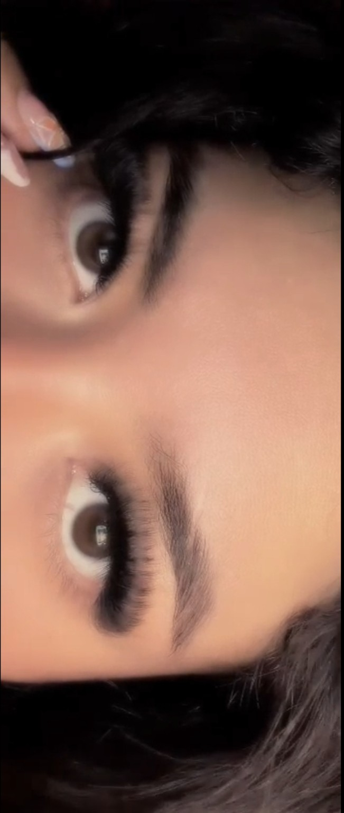

Porque unas flores amarillas de verdad todavía tienen que esperar… pero estas no. ❤️
Siendo sincero, creo que a estas alturas ya sabes perfectamente lo que siento por ti. 😂❤️
Así que esta carta no es para confesarte algo que no sepas. Es simplemente porque soy yo, y ya sabes que contigo me pongo demasiado romántico y cursi. 😂
Después de tantos años de conocernos, a veces me pongo a pensar en todo lo que hemos vivido y en cómo terminamos llegando hasta aquí.
Porque sí... durante muchísimo tiempo me gustaste.
Siempre hubo algo diferente contigo. Siempre te traté de una manera especial, aunque durante años nunca me atreví a decirte todo lo que realmente pensaba y sentía.
Hasta que hace un tiempo finalmente me atreví.
Y desde ese momento siento que entre nosotros cambió algo.
Pasamos de ser amigos de tantos años a tener una conexión que, sinceramente, ya no sé ni cómo explicar. 😂❤️
Nos decimos cosas bonitas, nos decimos “te amo”, nos tratamos como si fuéramos algo más y terminamos cruzando todos los límites que probablemente ninguno de los dos imaginaba cuando empezamos a conocernos.
Y ¿sabes qué?
Me encanta.
Me encanta la confianza que tenemos, la forma en que nos tratamos y esa manera tan nuestra de estar presentes el uno para el otro.
No sé exactamente qué nombre ponerle a lo nuestro, pero tampoco siento que necesitemos hacerlo.
Para mí eres alguien demasiado especial.


Cuatro años de conocernos y todavía aquí ❤️
Y obviamente no podía hacerte algo así sin hablar de tus ojitos preciosos.
Ya sé que probablemente estás cansada de que te diga que son preciosos 😂, pero qué culpa tengo yo de que sean tan bonitos.
Además, si tengo la oportunidad de recordártelo, la voy a aprovechar.
Tienes unos ojitos preciosos, preciosa.
Este video tiene un lugar especial aquí. ❤️
Y probablemente mañana te lo vuelva a decir.
Y pasado mañana también.
Porque contigo nunca me voy a cansar de decirte las cosas bonitas que pienso de ti. ❤️
🌻 Quizás te preguntes por qué estas flores no llegaron hasta tus manos… y créeme, no fue por falta de ganas si pudiera, te llenaría de flores cada vez que pudiera, porque siento que hasta un jardín entero se quedaría corto para alguien tan preciosa como tú. 🌻❤️
Porque después de tantos años sigues siendo esa persona que consigue hacerme sentir un montón de cosas.
Y porque, aunque estemos lejos, quería encontrar una manera de hacerte sonreír aunque fuera desde aquí.

Así que estas flores son para ti, preciosa. 🌻❤️
Y algún día, cuando pueda darte unas flores amarillas de verdad, espero poder ver tus ojitos mientras te las entrego.
Esas ya no van a ser virtuales.
Y probablemente en ese momento vuelva a decirte lo mismo que te digo siempre:
qué preciosos son tus ojitos. 😂❤️
Pero hay algo más que quiero decirte.
Si hay algo que deseo de todo esto que tenemos, es que ojalá no sea algo que simplemente pase con el tiempo.
Quiero que dure.
Quiero que pasen los años y que podamos mirar hacia atrás y acordarnos de todo esto con una sonrisa.
Quiero seguir diciéndote preciosa, seguir molestándote con tus ojitos, seguir diciéndote lo mucho que me encantan y probablemente seguir repitiéndote lo mismo aunque ya te lo haya dicho mil veces. 😂❤️
Quiero seguir amándote mientras la vida nos siga dando momentos para compartir.
Y si algún día pasan muchísimos años y me preguntas si todavía me parecen preciosos tus ojitos, espero poder mirarte y decirte que sí.
Porque quiero que esos ojitos sigan siendo de las cosas que más me gustan de ti durante muchísimo, muchísimo tiempo.
Y si me preguntas hasta cuándo quiero seguir haciéndolo...
Hasta que mis propios ojos dejen de mirar. ❤️
Porque mientras pueda amarte, voy a amarte.
Mientras pueda decirte preciosa, voy a decírtelo.
Y mientras pueda mirar tus ojitos, voy a seguir diciéndote lo preciosos que son.
Gracias por estos cuatro años.
Por todo lo que hemos vivido, por todas las conversaciones, por las risas, por la confianza y por todas esas cosas que hicieron que termináramos siendo lo que somos ahora.
No sé qué nos depare el futuro ni qué nombre tendrá lo nuestro.
Pero sí sé que te amo muchísimo, que me encantas y que eres una persona que ocupa un lugar muy especial en mi vida. ❤️
🌻 Feliz día de las flores amarillas. 🌻